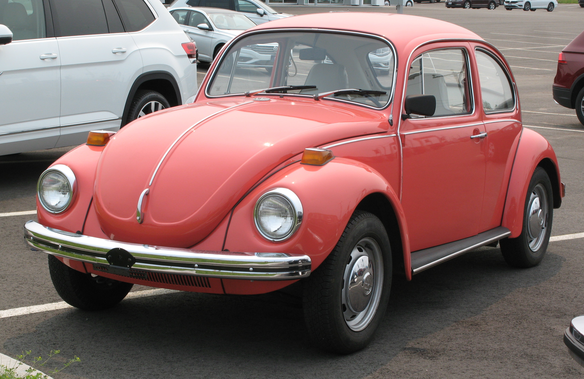
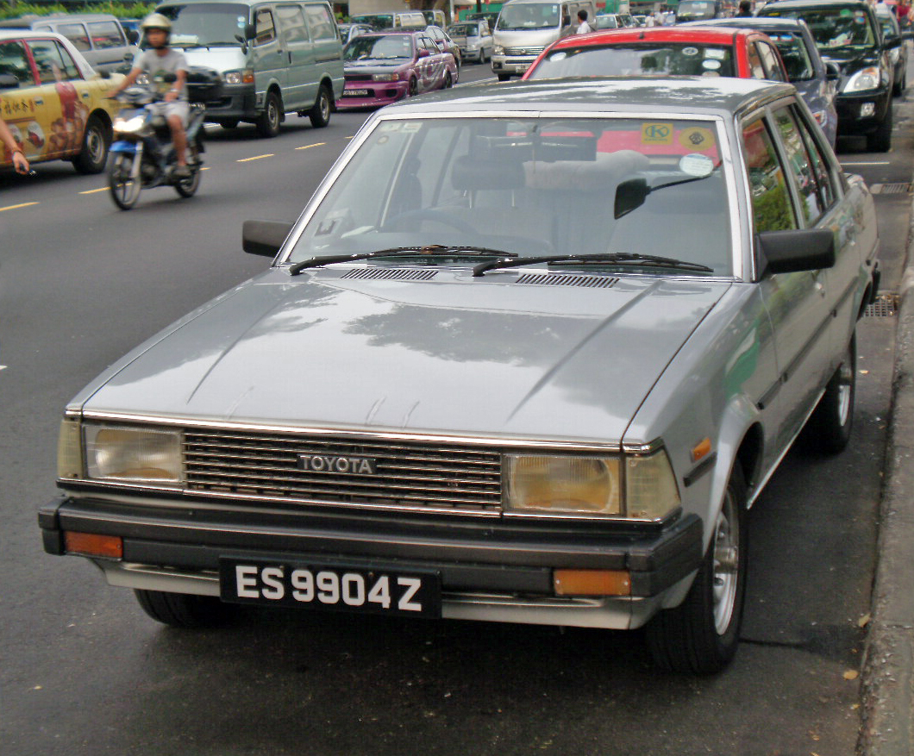
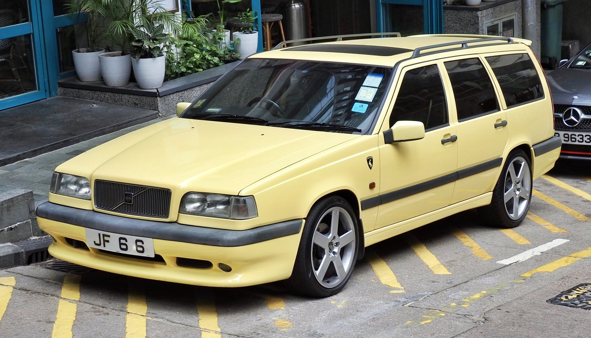
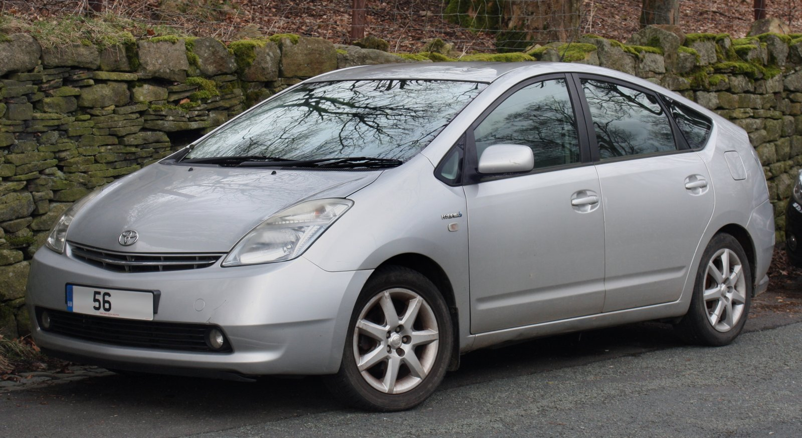
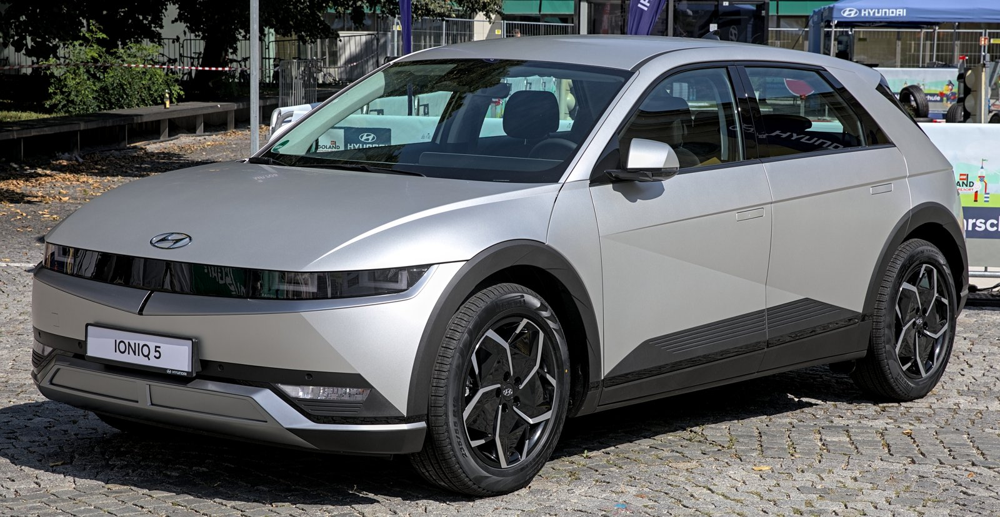

Color is only one dimension of character. Even painted in the same shade, cars once occupied completely different architectural archetypes: long-hooded sports coupés, vertical station wagons, and sharp notchback sedans.
Explore 16,469 classified production vehicles to see how body styles shifted and how individual dimensions evolved.
Viewed in direct side profile, a vehicle's silhouette exposes its structural philosophy: hood length, window-to-body proportion, roof arc, and overhangs.

Curved rear-engine teardrop silhouette with pronounced rounded fenders, tall upright cabin, and minimal forward engine hood.

Crisp geometric 3-box notchback architecture with planar horizontal beltline, flat hood, and upright rectangular passenger glasshouse.

Iconic vertical 90-degree tailgate and extended roofline engineered for maximum volumetric cargo efficiency and 360-degree driver visibility.

Pioneering aero-derived mono-volume wedge with raked windshield continuous into the hood line, ending in a sharp aerodynamic Kammback rear lip.
High-beltline executive crossover stance featuring elevated ground clearance, bluff upright front prow, and thick protective roof pillars.

Modern EV skateboard architecture pushing axles out to a limousine-like 3,000 mm wheelbase, minimal front/rear overhangs, and 45-degree C-pillar.
Decadal composition of production models across eight authentic automotive body categories (1970–2024). Click any body type button below to isolate its physical dimensions, market share, and proportions.
Annual percentage share of vehicle introductions and total model counts from 1970 to 2024.
Median exterior dimensions derived exclusively from selected body type production models.
Size is not shape. Tracking the profile stance ratio (Length ÷ Height) and packaging wheelbase ratio (Wheelbase ÷ Length) specifically for this body shape over time.
Primary Source: Historical Automotive Specification Archive & VIN Catalogue.
Sample Size: 16,469 classified production passenger vehicles (1970–2024).
Variables Tracked: Overall Length, Width, Height, Wheelbase, Curb Weight, Body Class, and Generation Production Spans.
Dimensions represent production model medians in millimeters. All figures are strictly computed within the active body style category so that growth in SUVs does not falsely inflate sedan measurements.
Years with fewer than two classified production introductions are preserved with visual chart gaps rather than interpolated estimates.
Beyond what we see, a car's identity lived in what we heard: cylinders, aspiration, displacement, and mechanical sound.
EXPLORE SOUND →